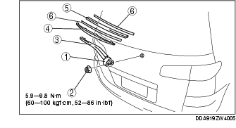
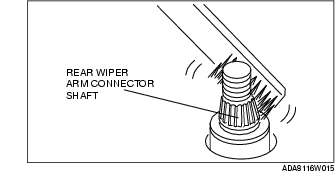

Rear wiper arm and blade removal/installation
1. Remove in the order indicated in the table.

2. Install in the reverse order of removal.
3. Adjust the rear wiper arm and blade. (See REAR WIPER ARM AND BLADE ADJUSTMENT.)
Rear Wiper Arm Installation Note
1. Clean the rear wiper arm connector shaft using a wire brush before installing the rear wiper arm.
